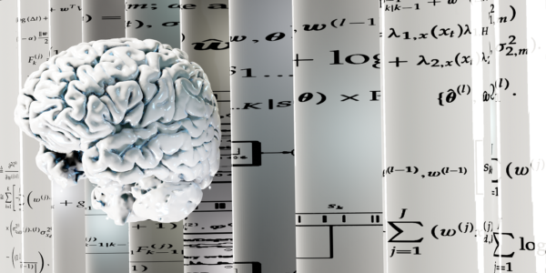
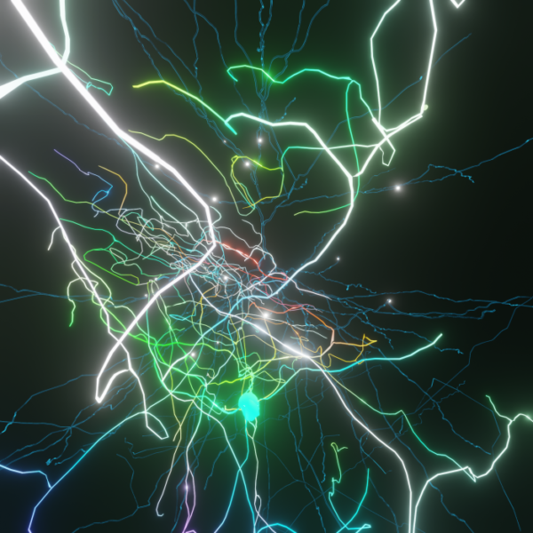

Cognition & Sleep Team
Investigating how travelling sleep spindles, sharp-wave ripples, and single-neuron replay consolidate human memory and orchestrate waking cognition.


Understanding Sleep and Dreams
We spend a third of our lives asleep—a vital physiological process for learning, memory consolidation, and synaptic homeostasis. Utilizing simultaneous invasive intracranial and scalp recordings, our team tracks how the human cortex enters and exits sleep states. We study the generation and spatiotemporal propagation of sleep spindles, slow waves, K-complexes, and hippocampal sharp-wave ripples, including how closed-loop electrical stimulation during sleep spindles modulates human memory networks.


Human Cognition & Neural Replay
Utilizing intracranial recordings from patients undergoing epilepsy monitoring and neurosurgical procedures, we directly observe human cognition in action with unmatched spatial and temporal precision.
We design behavioral paradigms and Bayesian state-space decoders to probe memory formation, motor sequence replay during rest, and executive cognitive control—demonstrating how targeted stimulation of deep structures (such as the caudate and internal capsule) can directly enhance human learning and prefrontal function.
Selected Team Publications (10)
-
Dickey CW, Sargsyan A, Madsen JR, Eskandar EN, Cash SS, Halgren E. Travelling spindles create necessary conditions for spike-timing-dependent plasticity in humans. Nat Commun. 2021 Feb 15;12(1):1027. doi:10.1038/s41467-021-21298-x
-
Eichenlaub JB, Jarosiewicz B, Saab J, Franco B, Kelemen J, Halgren E, Hochberg LR, Cash SS. Replay of learned neural firing sequences during rest in human motor cortex. Cell Rep. 2020 May 5;31(5):107581. doi:10.1016/j.celrep.2020.107581
-
Abou Jaoude M, Sun H, Pellerin KR, Pavlova M, Sarkis RA, Cash SS, Westover MB, Lam AD. Expert-level automated sleep staging of long-term scalp electroencephalography recordings using deep learning. Sleep. 2020 Nov 12;43(11):zsaa112. doi:10.1093/sleep/zsaa112
-
Eichenlaub JB, Biswal S, Peled N, Rivilis N, Golby AJ, Lee JW, Westover MB, Halgren E, Cash SS. Reactivation of motor-related gamma activity in human NREM sleep. Front Neurosci. 2020 May 12;14:449. doi:10.3389/fnins.2020.00449
-
Krempp C, Paulk AC, Truccolo W, Cash SS, Zelmann R. Effect of closed-loop direct electrical stimulation during sleep spindles in humans. Annu Int Conf IEEE Eng Med Biol Soc. 2020 Jul;2020:3586-3589. doi:10.1109/EMBC44109.2020.9175404
-
Bick SK, Patel SR, Katnani HA, Peled N, Widge A, Cash SS, Eskandar EN. Caudate stimulation enhances learning. Brain. 2019 Oct 1;142(10):2930-2937. doi:10.1093/brain/awz254
-
Widge AS, Zorowitz S, Basu I, Paulk AC, Cash SS, Eskandar EN, Deckersbach T, Miller EK, Dougherty DD. Deep brain stimulation of the internal capsule enhances human cognitive control and prefrontal cortex function. Nat Commun. 2019; PMC30948727.
-
Jiang X, Gonzalez-Martinez J, Cash SS, Chauvel P, Gale J, Halgren E. Improved identification and differentiation from epileptiform activity of human hippocampal sharp wave ripples during NREM sleep. Hippocampus. 2019 Nov 25. doi:10.1002/hipo.23183
-
Yousefi A, Basu I, Paulk AC, Peled N, Eskandar EN, Dougherty DD, Cash SS, Widge AS, Eden UT. Decoding hidden cognitive states from behavior and physiology using a Bayesian approach. Neural Comput. 2019 Sep;31(9):1751-1788. doi:10.1162/neco_a_01196
-
Vargas-Irwin CE, Feldman JM, King B, Simeral JD, Sorice BL, Oakley EM, Cash SS, Eskandar EN, Friehs GM, Hochberg LR, Donoghue JP. Watch, imagine, attempt: Motor cortex single-unit activity reveals context-dependent movement encoding in humans with tetraplegia. Front Hum Neurosci. 2018; PMC30524258.